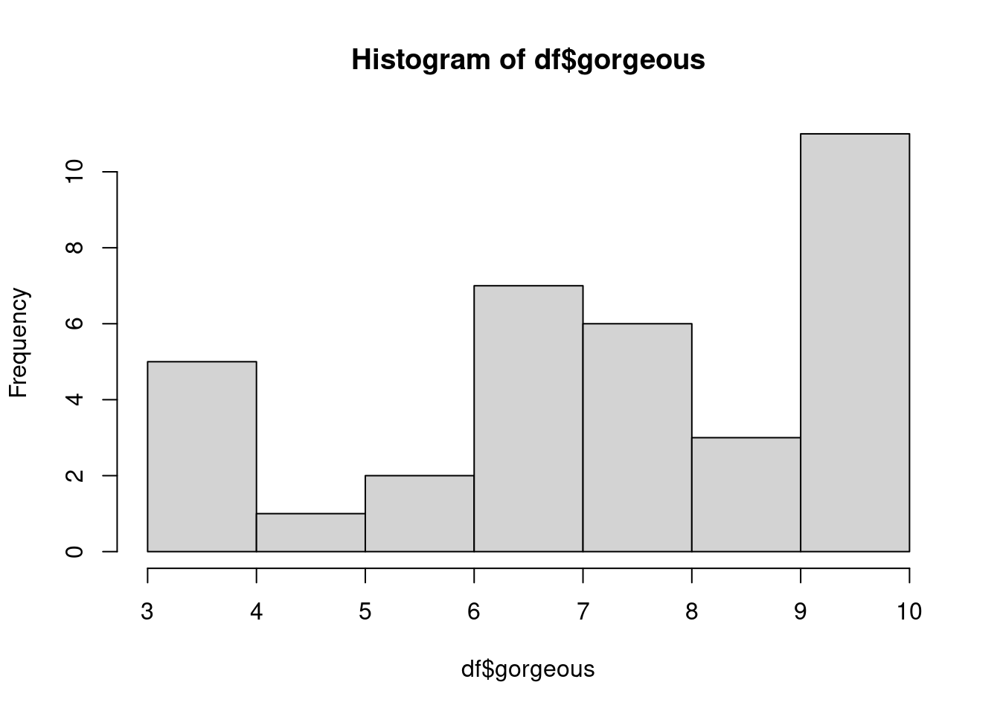
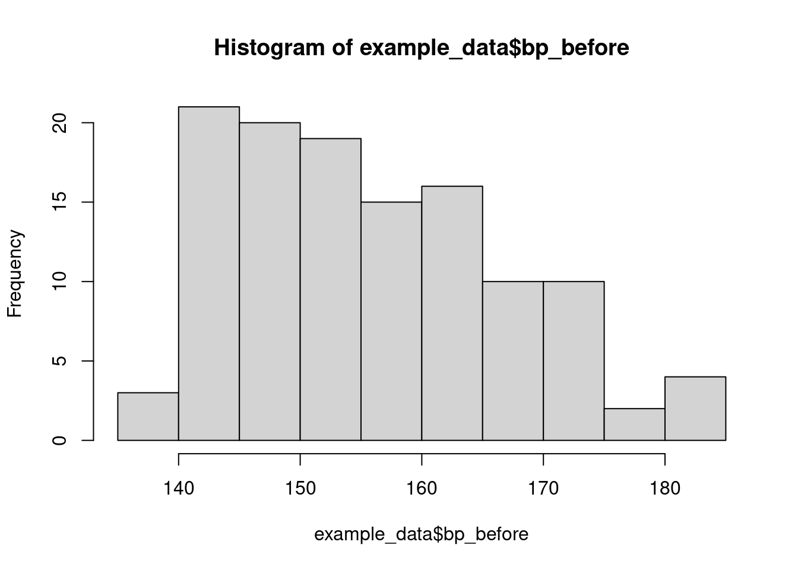
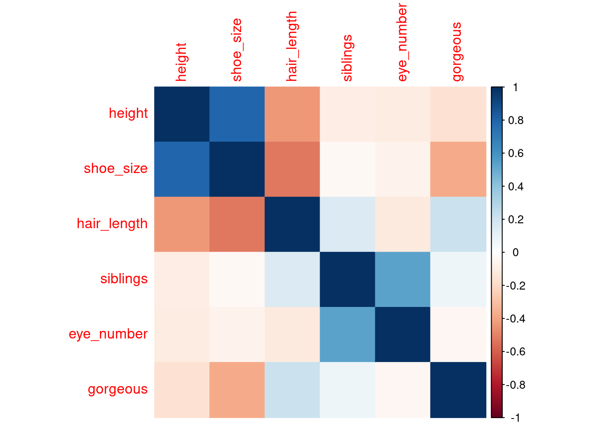
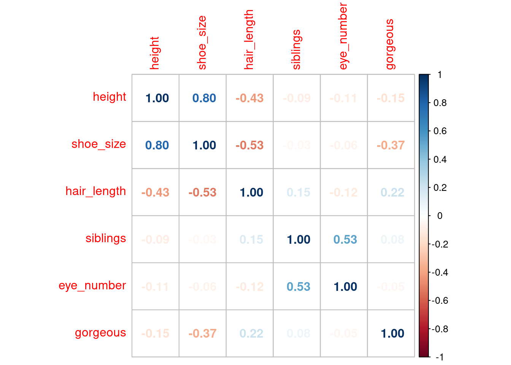

5 Cтатистические критерии, корреляции
5.1 Введение
Дисклеймер: в этом файле под каждым заданием есть текстовые ответы (без кода), скрытые под синенькой плашкой “спойлер”. Она срабатывает при наведённом на неё курсоре:
Если вы случайно проспойлерили себе ответ, не расстраивайтесь, вам всё ещё нужно написать код, который будет выдавать этот ответ :)
В этом материале мы разберём некоторые часто используемые статистические критерии (тесты) - базовые инструменты для проверки статистических гипотез.
Мы будем использовать датасет, который собрали вместе с вами в опросе перед школой.
На всякий случай, ещё раз описание переменных:
height |
рост в сантиметрах |
eye_color |
цвет глаз |
eye_number |
количество глаз |
beard |
борода: есть/нет |
soft_drink |
кола/пепси/нет спасибо |
cats |
количество кошек |
gorgeous |
степень великолепности от 1 до 10 |
siblings |
число братьев и сестер |
hair_length |
длина волос (см) |
shoe_size |
размер обуви |
guitar |
уровень игры на гитаре |
hot_drink |
чай/кофе/потанцуем |
month |
месяц рождения |
hogwarts |
факультет в хогвартсе |
dream |
кем мечтали стать в детстве |
Выбор теста зависит от задачи, от типа данных, которые у вас есть, а также иногда от размера выборки.
5.2 Goodness-of-fit tests
Первое, что мы обсудим - это критерии согласованности (goodness-of-fit): биномиальный и хи-квадрат. Они используются, когда у нас есть какая-то выборка и теоретическое предположение о параметрах распределения в генеральной совокупности, и показывают вероятность получить данную выборку из генеральной совокупности с такими параметрами.
5.2.1 Биномиальный критерий
Биномиальный критерий используется для выборки из биномиального распределения. Это распределение числа успехов в серии испытаний Бернулли.

Самый простой пример – как обычно, подбрасывание монетки :) Мы заранее знаем про монетку, что она выпадает орлом в 50% случаев. Если из 10 подбрасываний 9 раз выпал орёл, мы можем подсчитать в точности, насколько вероятно было такое событие, и решить, кривая ли эта монетка.
Возможно, вам знакома формула:
\[P(k) = \frac{n!}{k!(n-k)!}p^k(1-p)^{n-k}\]
Так это вот оно и есть (вероятность получить k орлов из n подбрасываний, при теоретическом предположении, что вероятность орла равна p)
В R используется функция binom.test(x,n,p), где x – количество успехов, n – количество испытаний, p – теоретическая вероятность.
Давайте сразу попробуем с монеткой:
binom.test(9,10,0.5)##
## Exact binomial test
##
## data: 9 and 10
## number of successes = 9, number of trials = 10, p-value = 0.02148
## alternative hypothesis: true probability of success is not equal to 0.5
## 95 percent confidence interval:
## 0.5549839 0.9974714
## sample estimates:
## probability of success
## 0.9Что показывает нам выдача:
- альтернативную гипотезу теста (истинная вероятность выпадения орла не равна 0.5)
- sample estimate – вероятность орла на нашей конкретной выборке (0.9)
- 95%-ный доверительный интервал для выборочной вероятности (который не захватывает теоретическую вероятность 0.5, значит, скорее всего, монетка кривая)
- p-value (собственно, вероятность получить 9 орлов, если бы монетка было ровная).
Считать ли вероятность 0.02 достаточно маленькой для признания монетки кривой – это наш личный выбор, в мире монеток всё возможно. Если обратиться к одному из конвенциональных значений p-value < 0.05, то да, монетка кривая :)
Теперь к реальным данным!
Давайте посчитаем среди нас число людей с третьим глазом и их долю.

# сначала подгрузим данные
df <- read.csv('about_us_eng.csv')sum(df$eye_number == 3)## [1] 3sum(df$eye_number == 3)/nrow(df)## [1] 0.08571429nrow()– это число строк в датасете – то есть количество наблюдений
Итак, вероятность случайно выбранному человеку иметь третий глаз равна всего 0.086 (или 8.6%).
ЗАДАЧКА
Отфильтруйте в отдельный датасет всех людей, у который ровно одна кошка. Проверьте гипотезу, что среди них вероятность иметь третий глаз значимо не отличается от 0.086.
Какова в точности вероятность третьего глаза у людей с одной кошкой? Отличается ли она от 0.086 на основе p-value?
Вероятность = 0.15, но разница с 0.086 не значима (p-value=0.3)
Кстати: помимо x, n, p функция binom.test() принимает на вход параметры alternative и conf.level. Первый параметр – это право/лево/сторонняя альтернатива, а второй – уровень значимости. Такие параметры есть во всех или почти всех критериях, и их можно менять. По дефолту альтернатива обычно двусторонняя, уровень значимости: 0.95.
5.2.2 Критерий Хи-квадрат
Логика критерия Хи-квадрат в общем такая же, как у биномиального. Если продолжать простые примеры: биномиальный критерий – это про монетку, а Хи-квадрат – про игральный кубик, на котором все числа должны выпадать с вероятностью 1/6. Частота исходов, которые получаются при броске кубика, имеет мультиномиальное распределение, биномиальное – его частный случай.
Критерий можно применить к любой категориальной переменной, которая принимает два и более значений: например, наши факультеты Хогвартса – и проверить, соответствует ли распределение участников по факультетам реальному распределению детей в Хогвартсе (на всех факультетах одинаковое количество человек).
Единственная проблема: функция chisq.test(), которая для этого предназначена, принимает на вход не исходную переменную с ответами на вопрос. Ей нужно скормить вектор частот каждого факультета (например: c(8,8,9,9), что означает, что в нашей выборке 8 гриффиндорцев, 8 слизеринцев и т.д.).
Мы, конечно, можем посчитать эти числа руками и засунуть их в вектор, но, как вы уже возможно догадались, это не наш путь!
Чтобы посчитать частоты, можно воспользоваться функцией table() – она делает табличку из всех значений данной переменной и считает количество этих значений.
table(df$hogwarts)##
## Gryffindor Hufflepuff Ravenclaw Slytherin
## 9 6 14 6Уже можно заметить, что Рейвенкло – более популярный факультет, чем все остальные (чё, самые умные, да?)
Кроме того, понадобится вектор теоретических вероятностей каждого исхода (в нашем случае вектор: 4 раза по 0.25, т.к. мы считаем, что все факультеты равновероятны)
Тут есть, например, такой способ: буквально “повторить 0.25 4 раза” (rep() – это repeat)
rep(0.25, 4)## [1] 0.25 0.25 0.25 0.25Ну и теперь попробуем всё это вставить в chisq.test.
chisq.test(table(df$hogwarts), p = rep(0.25, 4))##
## Chi-squared test for given probabilities
##
## data: table(df$hogwarts)
## X-squared = 4.8857, df = 3, p-value = 0.1804Внимание! Вставляя ожидаемые вероятности, нужно обязательно ставить перед ними p=, потому что по дефолту chisq.test – это двухвыборочный хи-квадрат, который ждет на вход вектор х и вектор у – две разные выборки по одной переменной.
В выдаче, в общем, нет ничего, кроме p-value. Если оно больше 0.05, мы считаем, что да, вероятно наша выборка участников школы взята из генеральной совокупности, где все люди распределены по факультетам равномерно.
Ну и для интересующихся формула, которая там используется:
\[ \chi^2 = \sum \frac{(O-E)^2}{E} \]
где O - наблюдаемое число студентов (например, в Гриффиндоре было 9), E - ожидаемое число студентов (размер выборки умножить на 0.25 = \(35 * 0.25 = 8.75\)). Подсчитывается для 4 факультетов и суммируется по ним. Получившееся число имеет расперделение хи-квадрат с 3 степенями свободы (число факультетов - 1). p-value - это вероятность, что статистика критерия будет примет более экстремальные значения, чем получившееся: \(p(\chi^2 >= 4.88)\). Вот тут можно поиграться и посмотреть как по значению статистики рассчитывается p-value.
МИКРО-ЗАДАЧКА
Проверьте, что все цвета глаз встречаются одинаково часто.
Микро-подсказка: цветов, как и факультетов 4 (карие, голубые, зеленые, иное).
p-value = 0.01739 < 0.05, то есть нулевую гипотезу можно отвергнуть. Правда, по самой выдаче теста мы не сможем узнать, в какую сторону (то есть какой именно цвет глаз преобладает, или какой наоборот встречается редко). Для этого нужно обращаться к таблице частот.

Поздравляем, вы теперь знаете, что такое критерии goodness-of-fit
5.3 Тестирование взаимосвязи между двумя категориальными переменными
В этом разделе разберём точный тест Фишера и ещё одну разновидность критерия Хи-квадрат.
Нам понадобятся:
5.3.1 таблицы сопряжённости
Как их получить?
Всё та же функция table(), но с двумя переменными.
table(df$eye_color, df$hogwarts)##
## Gryffindor Hufflepuff Ravenclaw Slytherin
## blue 1 0 4 2
## brown 4 4 5 3
## green 2 1 5 1
## other 2 1 0 0В чём смысл критериев? – В том чтобы проверить, что значения разбросаны по всем ячейкам равномерно. Альтернативная гипотеза: в каких-то ячейках числа экстремально большие или маленькие, и это можно интерпретировать как наличие взаимосвязи между нашими переменными.
Так, например, людей с коричневыми глазами на разных факультетах примерно поровну, а вот люди с голубыми почти все попали в Рейвенкло.
Здесь мы впервые сталкиваемся с ситуацией, когда число наблюдений имеет значение. Точный тест Фишера применяется, когда ожидаемое количество людей хотя бы в одной ячейке таблицы меньше пяти.
Что вообще за ожидаемое количество? Ну, это количество людей в каждой ячейке, если бы переменные были независимы. Считаются эти числа по правилу перемножения вероятностей для независимых событий.
По данным мы можем отдельно расчитать вероятность голубых глаз и вероятность Гриффиндора, а потом перемножить их и получить вероятность одновременно голубых глаз и Гриффиндора. Умножим на размер выборки – получим ожидаемое число людей с голубыми глазами в Гриффиндоре.
sum(df$eye_color == 'blue')/nrow(df)## [1] 0.2sum(df$hogwarts == 'Gryffindor')/nrow(df)## [1] 0.2571429sum(df$eye_color == 'blue')/nrow(df) *
sum(df$hogwarts == 'Gryffindor')/nrow(df) *
nrow(df)## [1] 1.8Чтобы узнать ожидаемое количество людей во всех ячейках сразу, а не считать вот это вот 16 раз, можно воспользоваться такой конструкцией:
chisq.test(table(df$eye_color, df$hogwarts))$expected##
## Gryffindor Hufflepuff Ravenclaw Slytherin
## blue 1.8000000 1.2000000 2.8 1.2000000
## brown 4.1142857 2.7428571 6.4 2.7428571
## green 2.3142857 1.5428571 3.6 1.5428571
## other 0.7714286 0.5142857 1.2 0.5142857Здесь мы просто провели тест хи-квадрат на сопряженность, но не ради результата, а чтобы вытащить из него ожидаемые (expected) значения для таблицы сопряженности.
Да, к результатам тестов можно обращаться через знак доллара, как и к датафрейму, чтобы вместо стандартной выдачи получить конкретные числа, которые используются там внутри при расчетах.
5.3.2 Тест Фишера
В общем-то, почти во всех ячейках числа меньше пяти, значит тут нам точно нужен критерий Фишера.
Руками он считается так, а в R – вот так (просто засовываем в функцию таблицу сопряженности):
fisher.test(table(df$eye_color, df$hogwarts))##
## Fisher's Exact Test for Count Data
##
## data: table(df$eye_color, df$hogwarts)
## p-value = 0.5536
## alternative hypothesis: two.sidedИнтерпретация: p-value большое, значит нулевая гипотеза не отвергается \(\Rightarrow\) между переменными нет взаимосвязи.
Вместо категориальных переменных мы можем вставлять в таблицы сопряженности логические векторы.
Давайте посмотрим на совместное распределение людей по выбору горячих напитков и размеру обуви до 39 vs. 40+.
table(df$hot_drink, df$shoe_size > 39)##
## FALSE TRUE
## coffee 4 8
## shall we dance 6 4
## tea 8 4Тут, конечно, нужно держать в голове, что такое TRUE, а что FALSE, это не очень удобно, но уверена, мы справимся.
Посмотрим на ожидаемые частоты для этой таблицы, если выбор горячего напитка не связан с размером обуви.
chisq.test(table(df$hot_drink, df$shoe_size > 39))$expected## Warning in chisq.test(table(df$hot_drink, df$shoe_size > 39)): Chi-squared
## approximation may be incorrect##
## FALSE TRUE
## coffee 6.352941 5.647059
## shall we dance 5.294118 4.705882
## tea 6.352941 5.647059Обратите внимание: R выдал предупреждение, что аппроксимация тестом хи-квадрат может быть неверной. Это как раз потому что у нас тут есть одна ячейка, в которой ожидаемая частота получилась все-таки меньше пяти (в прошлый раз я просто скрыла это предупреждение).
Давайте попробуем забить на это и посчитать на этой таблице оба наших критерия.
5.3.3 Добавляем Хи-квадрат
Кстати, критерий Хи-квадрат в предыдущем случае назывался “Chi-squared test for given probabilities”, а здесь у нас будет “Pearson’s Chi-squared test”, и в англоязычных источниках иногда встречается просто название Pearson’s test (но чаще chi-squared)). Считается он по той же схеме, что и одновыборочный, вот пример
fisher.test(table(df$hot_drink, df$shoe_size > 39))##
## Fisher's Exact Test for Count Data
##
## data: table(df$hot_drink, df$shoe_size > 39)
## p-value = 0.3155
## alternative hypothesis: two.sidedchisq.test(table(df$hot_drink, df$shoe_size > 39))##
## Pearson's Chi-squared test
##
## data: table(df$hot_drink, df$shoe_size > 39)
## X-squared = 2.9593, df = 2, p-value = 0.2277Можно увидеть, что оба теста выдают большое p-value, и мы не ошиблись бы, выбрав любой из них и сделав вывод что размер обуви больше/меньше 40 не связан с выбором горячего напитка. Однако p-value в хи-квадрате всё же получилось меньше, и если бы ситуация была более спорной, выбрав критерий хи-квадрат, мы могли бы получить достаточно маленькое p-value и, скажем так, найти связь там где её нет – совершить т.н. ошибку первого рода.

Ну что ж, и наконец…
ЗАДАЧИЩА
Для удобства интерпретации создайте переменные
-
very_gorgeous, которая равна “very gorgeous”, если gorgeous равно 10, “not very” в остальных случаях
-
cat_owner, которая равна “cat”, если cats != 0, “no cat” в остальных случаях
Подсказка: это можно сделать например так
df$very_gorgeous <- ifelse(df$gorgeous == 10, “very gorgeous”, “not very”)
(внутри функции на первом месте условие; затем присваемое значение, если условие соблюдено; затем присваемое значение в остальных случаях)
Но это далеко не единственный способ, и кажется, вы уже должны знать как минимум один иной; если да, можете вспомнить его.
Посмотрите на таблицу сопряженности с ожидаемыми значениями и выберите подходящий тест.
Сделайте вывод о взаимосвязи переменных. Затем сравните таблицы ожидаемых и реальных значений и предположите, как можно проинтерпретировать такой вывод.
Более правильно выбрать тест Фишера, т.к. есть ячейка с ожидаемым значением меньше пяти. Тест показывает очень маленькое p-value (0.009471), и гипотезу о независимости переменных можно уверенно отвергнуть в пользу альтернативы. В реальных данных, по сравнению с ожидаемыми, можно заметить больше людей, одновременно очень великолепных и имеющих кошку (а также не очень великолепных и не имеющих кошку). Возможно, люди с кошками выше оценивают свою великолепность, или, может быть, великолепные люди чаще заводят кошек :)

Поздравляем! Вы познакомились с критериями взаимосвязи между двумя категориальными переменными, в которых используются таблицы сопряженности
5.4 Критерии для порядковых или ненормально распределённых переменных
В этом разделе мы разберём сравнение порядковых переменных, которые так же используются для количественных с ненормальным распределением. Для примера рассмотрим переменную великолепности, которая, скорее всего, и то, и другое.
Про графики интересно и красиво будет на другой паре, но мы можем нарисовать простенькую гистограмму, чтобы узреть ненормальное распределение:
hist(df$gorgeous)
Про связь великоплености и любви к кошкам мы уже знаем. Теперь допустим, мы хотим сравнить степень великолепности людей, которые никогда не видели гитару, и людей, которые что-то умеют на ней играть.
В этом нам поможет ранговый критерий Манна-Уитни, a.k.a. Mann-Whitney U test a.k.a. Wilcoxon rank-sum test
5.4.1 Тест Манна-Уитни
Критерием для выбора этого теста, помимо ненормальности или порядкового типа данных является также маленький размер выборки (конвенционально n<30). В нашей выборке 35 наблюдений, но когда мы разделим её на гитаристов и не-гитаристов, в каждой подвыборке будет меньше 20 человек. Здесь формула и пример расчёта статистики этого теста.
Ранговым этот критерий называется потому, что для его расчета значения в выборке расставляются по возрастанию, и потом им выставляются ранги (примерно как порядковые номера, но бывают дробными)
В R тест рассчитывается с помощью функции wilcox.test(), в которую надо положить переменную интереса (великолепность) и переменную группировки (умение играть на гитаре; мы создадим её прямо внутри функции, но можно, конечно, сделать новую переменную)
Между переменными ставится знак тильда (~), он означает, что мы задаём “формулу” взаимосвязи между нашими двумя переменными.
wilcox.test(df$gorgeous ~ df$guitar != 'What is a guitar? A giant ukulele?')##
## Wilcoxon rank sum test with continuity correction
##
## data: df$gorgeous by df$guitar != "What is a guitar? A giant ukulele?"
## W = 159, p-value = 0.5694
## alternative hypothesis: true location shift is not equal to 0К этому моменту вы, думаю, уже на автомате можете сделать вывод из этой выдачи: p-value большое, нулевая гипотеза не отвергается, связи между переменными нет. Другими словами, распределение великолепности гитаристов не “сдвинуто” относительно распределения не-гитаристов.
5.4.2 T-критерий Вилкоксона для зависимых выборок
a.k.a. Two-sample paired signed-rank test
Что ещё за зависимые выборки? Это выборки парных наблюдений – чаще всего до/после. В них нам важно не то, какая “в среднем” есть разница между выборкой А и выборкой В, а то, какое изменение произошло с каждым наблюдением. Например, динамика анализов пациентов в результате действия лекарства, или результаты одних и тех же учеников в начале и в середине года.
При этом здесь мы всё ещё работаем с ненормальными данными и/или маленькими выборками.
В наших данных нет никаких парных измерений, но они упорядочены по времени прохождения. Давайте для простоты представим, что первая половина наблюдений это “до”, а вторая половина - “после”. Создадим для этого переменную time.
df$time <- "before"
df$index <- c(1:35)
df$time[df$index>17] <- "after"Здесь я создаю переменную индекса от 1 до 35, и наблюдениям с индексом больше 17 присваиваю значение “after”.
Теперь давайте проверим гипотезу, что наши гипотетические люди, проходившие тест “два раза” успели за это время постричься или нарастить волосы (то есть, что между двумя измерениями произошло какое-то изменение длины волос). Используется всё тот же wilcox.test, но с параметром paired = TRUE
(Процедура расчёта критерия руками здесь)
Можно использовать альтернативную запись: сначала отдельно указывать используемые данные (data=df), а потом прописывать формулу – чтобы не писать лишний раз доллары.
wilcox.test(data = df, hair_length ~ time, paired = TRUE)## Error in wilcox.test.default(x = c(5L, 5L, 21L, 5L, 30L, 25L, 11L, 40L, : 'x' and 'y' must have the same length
Ошибка…
Дело в том, что тест-то у нас парный, а наблюдений в “до” и “после” разное количество. Мы присвоили значение “до” семнадцати наблюдениям, а “после” - восемнадцати. Давайте просто выкинем последнее))))
wilcox.test(data = df[1:34,], hair_length ~ time, paired = TRUE)##
## Wilcoxon signed rank test with continuity correction
##
## data: hair_length by time
## V = 45.5, p-value = 0.2547
## alternative hypothesis: true location shift is not equal to 0Итак, p-value большое; распределение длины волос не изменилось за время между “первым” и “вторым” измерениями.

Поздравляю! Мы смогли разобраться, что делать для сравнения всяких там ненормальных выборок, и даже неподходящие данные не смогли нам помешать! (На самом деле не надо так…)
5.5 Сравнение средних
В этом разделе мы рассмотрим критерий, который используется для сравнения средних в нормально распределённых количественных данных – t-test. Порядковые переменные при нормальности распределения и достаточно большой выборке тоже можно :)
Здесь всё будет в общем так же, как и с Вилкоксоном: независимые vs. парные выборки и снова проблемы с данными))))
5.5.1 t-критерий Стьюдента для независимых выборок
Подробно можно почитать здесь. А вкратце этот критерий сравнивает средние арифметические значения в двух выборках. Статистика теста имеет распределение Стьюдента – колокольчик, но чуть более приплюснутый, чем Гаусс.
В статистику теста входит разность между двумя выборочными средними, а также учитывается дисперсия каждой выборки.
В связи с этим возникает определённая развилка: статистика различается для выборок с одинаковыми и разными дисперсиями. Можно выбрать статистику, предполагающую разность или одинаковость дисперсий, исходя из теории (просто предположить, что обе выборки взяты из одной генеральной совокупности или из разных). Можно, с другой стороны, провести ещё и тест на равенство дисперсий.
Допустим, мы хотим сравнить средний рост участников, которые любят колу, с ростом всех остальных. Мы знаем, что это две подвыборки из одной и той же большой выборки, но можем заодно и сравнить дисперсии. Схема записи такая же, как и в большинстве предыдущих тестов:
var.test(df$height ~ df$soft_drink == 'coke')##
## F test to compare two variances
##
## data: df$height by df$soft_drink == "coke"
## F = 0.71214, num df = 15, denom df = 17, p-value = 0.5139
## alternative hypothesis: true ratio of variances is not equal to 1
## 95 percent confidence interval:
## 0.2615258 2.0031133
## sample estimates:
## ratio of variances
## 0.7121431Интерпретация тоже: p-value велико \(\Rightarrow\) дисперсии не различаются.
Теперь к t-тесту!
Синтаксис снова тот же. Но добавляем параметр var.equal=TRUE. По дефолту этот параметр включается со значением FALSE.
t.test(df$height ~ df$soft_drink == 'coke', var.equal=TRUE)##
## Two Sample t-test
##
## data: df$height by df$soft_drink == "coke"
## t = -1.7149, df = 32, p-value = 0.09603
## alternative hypothesis: true difference in means between group FALSE and group TRUE is not equal to 0
## 95 percent confidence interval:
## -9.3739450 0.8045005
## sample estimates:
## mean in group FALSE mean in group TRUE
## 168.9375 173.2222Здесь в выдаче уже достаточно много информации. Во-первых, можно посмотреть на сами средние значения: любители колы в среднем примерно на 4 сантиметра выше))) Однако на наших данных эта разница незначима (p-value > 0.05).
Есть также доверительный интервал для разницы средних. Если многократно брать и сравнивать такие же, как у нас тут, подвыборки, разница средних в 95% случаев будет лежать в интервале от -9.3 до 0.8 сантиметров.
5.5.2 t-критерий Стьюдента для зависимых выборок
По аналогии с ранговыми критериями можно догадаться, что тут нам опять нужны парные наблюдения. Давайте не будем больше насиловать наши данные и возьмём небольшой пример из интернета.
example_data <- read.csv('https://github.com/Opensourcefordatascience/Data-sets/raw/master/blood_pressure.csv')
str(example_data)## 'data.frame': 120 obs. of 5 variables:
## $ patient : int 1 2 3 4 5 6 7 8 9 10 ...
## $ sex : chr "Male" "Male" "Male" "Male" ...
## $ agegrp : chr "30-45" "30-45" "30-45" "30-45" ...
## $ bp_before: int 143 163 153 153 146 150 148 153 153 158 ...
## $ bp_after : int 153 170 168 142 141 147 133 141 131 125 ...Это просто какие-то непонятные пациенты, у которых измерено давление до и после какого-то воздействия (наверное, после лечения), для примера подойдёт)))
Сам критерий, в отличие от предыдущего, считается по другому алгоритму. Для независимых выборок просто берутся два средних арифметических, а потом их разница сравнивается с нулём. В этом критерии для каждого пациента будет считаться разница между “до” и “после”, а уже потом эти разницы будут усредняться. Мотематика тут

Если помните, в прошлый раз мы создали новую переменную “до/после”, а в этих данных измерения “до” и “после” – это две разные переменные. Мы гипотетически можем изменить формат данных на длинный и создать новую переменную, чтобы пользоваться известным нам синтаксисом. Но давайте просто включим данные в функцию по-другому: не через формулу с тильдой, а как две разных переменных x и y. Ну и не забываем параметр paired=TRUE
t.test(x=example_data$bp_before, y=example_data$bp_after, paired = TRUE)##
## Paired t-test
##
## data: example_data$bp_before and example_data$bp_after
## t = 3.3372, df = 119, p-value = 0.00113
## alternative hypothesis: true difference in means is not equal to 0
## 95 percent confidence interval:
## 2.070557 8.112776
## sample estimates:
## mean of the differences
## 5.091667Видим, что p-value маленькое, то есть разница между двумя стадиями измерения статистически значима.
Сама эта разница у нас получилась положительная. Чтобы правильно это интерпретировать, нужно помнить, что в этом тесте из значений x (то есть “до”) вычитаются значения y. А значит положительная разница означает, что давление “после” у пациентов в среднем стало ниже.
А теперь плот-твист! Внимательный читатель мог заметить, что мы не проверили наши непонятные данные из интернета на нормальность, а стоило бы… Вот, например, распределение давления до тритмента.
hist(example_data$bp_before)
Можно увидеть, что оно вообще-то не очень нормальное, и по-хорошему в этой ситуации стоило бы воспользоваться ранговым критерием.

Вернёмся снова к нашим данным. Мы уже израсходовали почти все количественные переменные, но всё-таки осталась одна на ЗАДАЧКУ
ЗАДАЧКА
Попробуем исследовать связь размера обуви с месяцем рождения.
Проверьте, отличается ли размер обуви в подвыборке родившихся весной и летом от размера всех остальных (да, придется немного повозиться с фильтрацией..)
Для этого вспомните последние 4 теста (на самом деле, конечно, два из них) и подумайте, какой из них подходит для этой задачи.
На что тут можно обратить внимание: во-первых переменная интереса – идельно количественная, и её “природное” распредление, вероятнее всего, нормальное. Однако если посмотреть на гистограммы распределений по подвыборкам, то в осени-зиме распределение может сойти за нормальное, а вот в весне-лете оно похоже то ли на равномерное, то ли на бимодальное. При этом дисперсии на подвыборках значимо не различаются. Поэтому итоговый выбор, на мой взгляд, лежит между Манном-Уитни и t-тестом с равными дисперсиями, и в целом можно использовать их оба, но более безопасный с точки зрения ошибки 1 рода – Манн-Уитни. т-тест показывает значимые различия (размер обуви у родившихся весной и летом больше), а статистика Манна-Уитни практически на границе значимости, чуть больше 0.05.

Примите мои поздравления! Вы осилили t-тесты и ощутили тяготы выбора между разными критериями. Впереди последний раздел!
5.6 Коэффициенты корреляции
Коэффициенты корреляции используются для изучения взаимосвязи между количественными или порядковыми переменными. Они позволяют оценивать как направление, так и силу этой взаимосвязи.
Основных коэффициентов три: Пирсона, Спирмена и Кендалла.
Корреляция Пирсона – для количественных переменных, другие два критерия ранговые и подходят для порядковых.
5.6.1 Корреляция Пирсона
Это мера линейной связи между двумя количественными переменными. Она принимает значения от -1 до 1, где единица означает идеальную положительную линейную связь, функциональную зависимость между переменными. Формула и пошаговый расчет с объяснением на картинках здесь
Обозначается этот критерий буквой R (иногда r)
А ещё есть несколько ресурсов, где можно поиграть в игру “угадай корреляцию по картинке”, и это забавно. Например, вот
Вообще, разные корреляции выглядят примерно так:

Рассчитаем корреляцию Пирсона на примере роста и размера обуви. Для этого используется функция cor(), которая предназначена для всех трёх методов, а Пирсон в ней дефолтный. Есть нюанс: она ломается на пропущенных значениях, а чтобы игнорировать их, в ней есть аргумент use = "complete.obs"
cor(df$height, df$shoe_size, use="complete.obs")## [1] 0.798224Для корреляций есть конвенциональные значения силы, причем, классификации встречаются разные. Мы возьмём такую:
- 00-.19 – очень слабая
- .20-.39 – слабая
- .40-.59 – средняя
- .60-.79 – сильная
- .80-1.0 – очень сильная
Наша корреляция роста с размером обуви на границе между сильной и очень сильной, что, в общем, логично :)
Можем ещё проверить значимость коэффициента корреляции. Для этой функции не нужно бороться с NA, оно само.
cor.test(df$height, df$shoe_size)##
## Pearson's product-moment correlation
##
## data: df$height and df$shoe_size
## t = 7.4962, df = 32, p-value = 1.557e-08
## alternative hypothesis: true correlation is not equal to 0
## 95 percent confidence interval:
## 0.6301581 0.8948430
## sample estimates:
## cor
## 0.798224Нулевая гипотеза: коэффициент корреляции равен нулю. Для проверки используется знакомая т-статистика. p-value здесь у нас очень мало, корреляция значимая (неудивительно). В этой выдаче тоже приводится само значение коэффициента, так что функцией cor() вообще можно особо не пользоваться :)
Можем также визуализировать это дело (не вдавайтесь в этот код, про ggplot расскажет лучше кто-то, кто не я)):
# install.packages("ggplot2")
library(ggplot2)
ggplot(data=df,aes(y=height,x=shoe_size)) +
geom_point() +
geom_smooth(method = "lm", se=FALSE)
Ну и напоследок подборка бредовых корреляций, чтобы никогда не забывать, что даже самые сильные и значимые корреляции бывают случайными :)
5.6.2 Ранговые коэффициенты: Спирман и Кендалл
Эти два чувака нужны, когда хотя бы одна из переменных не количественная, а порядковая.
Преимущество этих коэффициентов в том, что они схватывают и нелинейные взаимосвязи:

Главное, чтобы возрастание/убывание были монотонными.
Как выбирать между ними, честно говоря, мне не очень ясно. Я, пожалуй, не буду рекомендовать ничего конкретного, лучше при желании почитать внимательно и подробно. Единственное, насколько я понимаю, Кендалл лучше работает, когда в переменных много повторяющихся значений.
Давайте посмотрим на корреляцию великолепности с количеством братьев и сестёр (обоими способами). Использовать будем известный нам cor.test(), только пропишем внутри него методы. Для начала Спирмана.
cor.test(df$gorgeous, df$siblings, method = 'spearman')## Warning in cor.test.default(df$gorgeous, df$siblings, method = "spearman"):
## Cannot compute exact p-value with ties##
## Spearman's rank correlation rho
##
## data: df$gorgeous and df$siblings
## S = 6658.3, p-value = 0.7002
## alternative hypothesis: true rho is not equal to 0
## sample estimates:
## rho
## 0.06746409Тест выдал предупреждение, что p-value не может быть рассчитано точно из-за “ties” – это как раз те самые посторяющиеся значения, которых крайне много в переменной “siblings”, да и в переменной “gorgeous” тоже немало.
Что касается интерпретации, сама корреляция крайне слабая и статистически не отличается от нуля (незначима).
Совсем даже не задачка
Самостоятельно прогоните на тех же переменных Кендалла (kendall), сравните выводы
Ну вот, оказывается Кендалл выдаёт то же самое предупреждение про ties… При этом коэффициент оказался ещё чуть меньше, а p-value почти такое же. Что тут еще сказать, не знаю :)

5.7 Бонус: визуализация корреляционной матрицы
Когда нужно (или просто почему-то очень хочется) одновременно посмотреть на корреляцию всего со всем, можно создать корреляционную матрицу и визуализировать её. Для этого удобно использовать пакет corrplot, хотя этот способ не единственный. Его нужно будет установить и подключить.
#install.packages("corrplot")
library(corrplot)Чтобы всё работало, нужно отобрать только числовые переменные. У нас это рост, размер обуви, длина волос, число родственников, количество глаз и степень великолепности.
df_cor <- df[ , c("height", "shoe_size","hair_length","siblings","eye_number","gorgeous")] Чтобы создать матрицу корреляций, нужно этот новый датасет засунуть в cor (помним про complete.obs)
M<-cor(df_cor, use="complete.obs")
head(round(M,2))## height shoe_size hair_length siblings eye_number gorgeous
## height 1.00 0.80 -0.43 -0.09 -0.11 -0.15
## shoe_size 0.80 1.00 -0.53 -0.03 -0.06 -0.37
## hair_length -0.43 -0.53 1.00 0.15 -0.12 0.22
## siblings -0.09 -0.03 0.15 1.00 0.53 0.08
## eye_number -0.11 -0.06 -0.12 0.53 1.00 -0.05
## gorgeous -0.15 -0.37 0.22 0.08 -0.05 1.00А эту матрицу, в свою очередь, можно уже засунуть в функцию для рисования картинок – corrplot(). У неё есть аргумент method, отвечающий за то, что отображается в ячейках – разноцветные кружочки/квадратики/числа и т.д. Вот, например, два варианта:
corrplot(M, method="color")
corrplot(M, method="number")
Основная идея такая: сила связи отображается степенью прозрачности, направление – цветом. Справа, как вы видите, легенда.
Есть масса способов это дело кастомизировать: поменять цвета, фон, сделать картинку диагональной (убрать повторяющиеся ячейки), настроить шрифты, поменять местами переменные etc.
При этом помним, что для создания матрицы корреляций мы использовали функцию cor с дефолтным методом – Пирсоном, и не для всех наших переменных это хорошо.
Финал!

Поздравляю! И корреляции мы теперь тоже победили
Но есть еще кое-что:
Задачка “сделай сам” (скорее всего, на дом))
Подумайте, как исследовать взаимосвязь между такими парами переменных:
- великолепность и размер обуви
- число родственников и число глаз
- число котиков и детская мечта
- любимый горячий напиток и длина волос
Помните, что не обязательно мириться с плохим распределением какой-то переменной – можно сделать его еще хуже! (В смысле, стоит подумать о том, чтобы какие-то переменные использовать в изменённом виде: группировать категории, дробить числовые переменные на группы и делать из них порядковые и т.д.)
Здесь могла быть ваша реклама
Спасибо за вашу работу! Увидимся ещё!